Sampling period from 2000 to 2023 at nature conservation area “Rietzer See”
Analysis of survival and detection probability of 13 bird species
Phylogeny
Evolutionary relationship of 13 bird taxa for which estimation of survival and detection probability was mainly possible
All belong to the order Passeriformes (Sperlingsvögel), suborder Passeri (Singvögel)
Within Passeri three clades: Sylviida, Muscicapida, Passerida
Families within Sylviida: Paridae, Panuridae, Acrocephalidae, Phylloscopidae; Sylviidae, Locustellidae
Families within Muscicapida: Muscicapidae, Turdidae
Families within Passerida: Passeridae, Emberizidae
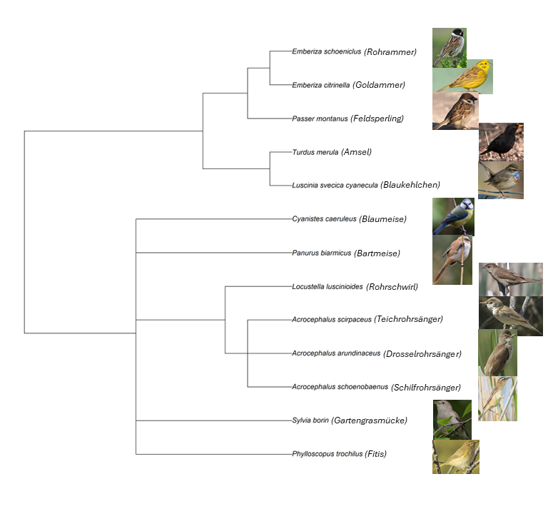
Overview of characteristics
Family
Taxa
Max. age (years)
Length (cm)
Weight (g)
Breeding season
Clutch size (eggs)
Breeding times (max.)
Emberizidae
Rohrammer
12
14-17
10 -28
April - August
4 -5
2
Goldammer
13
16 - 17
20 - 36,5
April - September
3 -5
3
Passeridae
Feldsperling
13
14 - 15
17 - 30
April - January
2 - 7
4
Turdidae
Amsel
22
24 - 27
85 - 105
March - September
2 - 6
2
Muscicapi- dae
Weißstern. Blaukehlchen
11
13 - 15
17 - 20
April - August
4 - 7
2
Paridae
Blaumeise
11 - 12
8 - 15
April - June
7 - 13
3
Panuridae
Bartmeise
6
14 - 17
11 - 21
March - September
4 - 8
4
Locustellidae
Rohrschwirl
7
13 - 14
12 - 21
April - July
4 - 6
2
Acrocephali-dae
Teichrohr-sänger
16
13
8 - 20
May - August
3 - 5
2
Drosselrohr-sänger
10
19 - 20
22 - 31
mid-May - July
4 - 6
2
Schilfrohr-sänger
11
11 - 12
8 - 17
late-April - July
4 - 6
2
Sylviidae
Gartengras-mücke
14
14
16 - 22
April - July
4 - 5
2
Phylloscopi-dae
Fitis
10
11 - 13
6 - 15
April - July
4 - 8
2
Exploratory data analysis
Abundance over the years
Stacked bar plot showing cumulative abundance of the 13 selected bird taxa for each each year, while showing individual species contribution represented by different colors.
Y-axis: number of sampled individuals
Highest total abundance in 2000 and 2021: more than 950 and 1050 individuals
Main abundance contribution: Rohrammer, Bartmeise, Teichrohrsänger, Schilfrohrsänger
Abundance decline between 2006 and 2018 with less than 450 Individuals in 2010 & 2012
Main decline in Schilfrohrsänger, also Teichrohrsänger, Bartmeise, Rohrammer
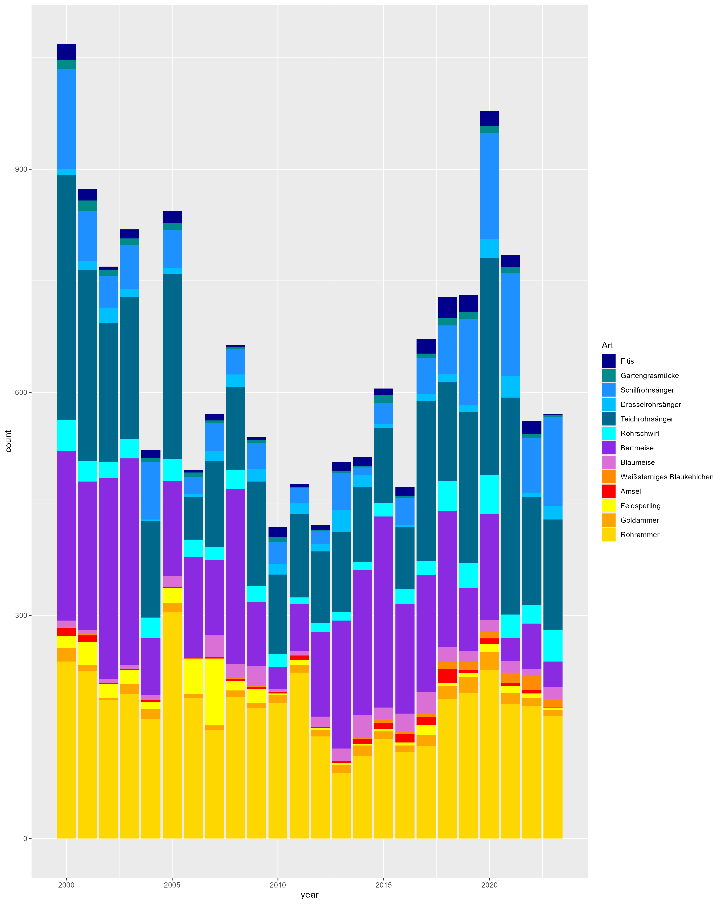
Box plot (1st row) and bar plot with mean and standard deviation of sampled individuals per year (2nd row) for each taxa showing spread and variation of abundance per year
Largest mean and variation of sampled individuals per year for Rohrammer, Bartmeise, Teichrohrsänger and Schilfrohrsänger
With Bartmeise and Teichrohrsänger showing greatest variation around the mean
Pronounced standard deviation in Feldsperling attributable to few (2) outliers
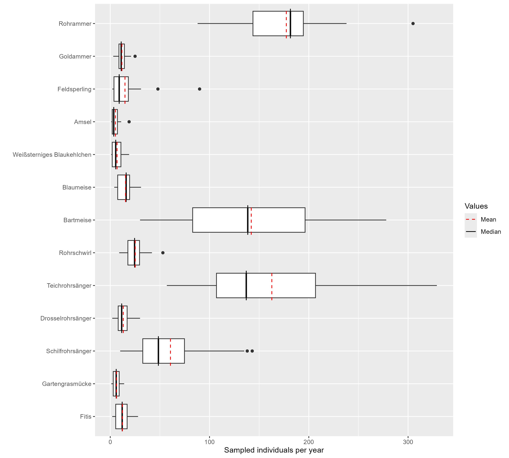
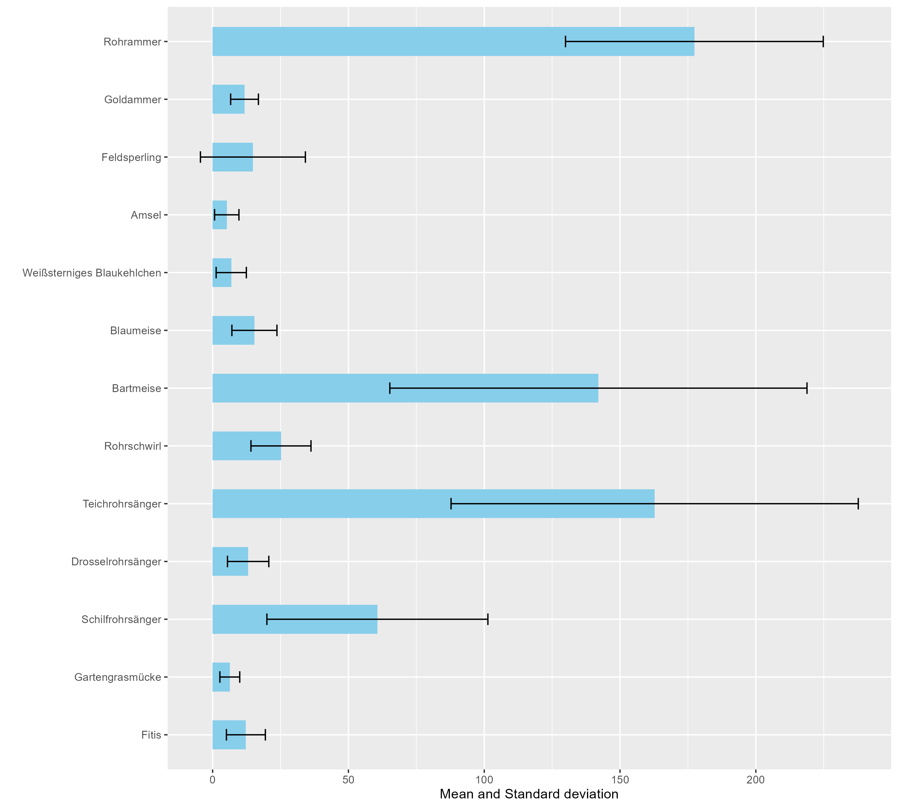
Bar plot for each taxa showing number of individuals for each year, while showing male/female composition
Fitis, Rohrschwirl, Gartengrasmücke and Schilfrohrsänger have lower abundances during 2005 and 2018
Drosselrohrsänger abundance higher during 2005 and 2014
Bartmeise and Blaumeise have pronounced abundance decline in 2010/11; abundance appears somewhat opposed to each other:
2000 to 2004: high abundance of Bartmeise vs. low abundance of Blaumeise
2021 to 2023: low abundance of Bartmeise vs. high abundance of Blaumeise
Amsel and Weißsterniges Blaukehlchen have main abundance in the last 8 to 9 years of the sampling period (2014 to 2023)
Feldsperling has main abundance in the first 9 years of the sampling period (2000 to 2009)
Large occurrence of unknown sex in Fitis, Rohrschwirl, Feldsperling, Gartengrasmücke and Blaumeise -> needs to be considered for parameter estimation with sex as covariate
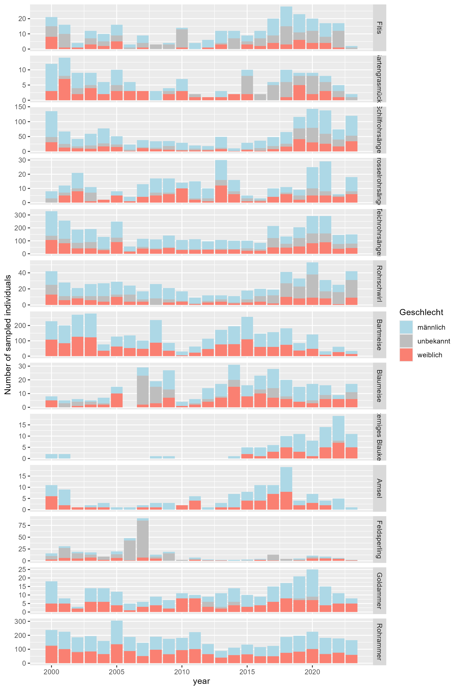
Statistical analysis
Cormack-Jolly-Seber model for open capture-recapture analysis -> estimates of detection and survival probability in open population where size changes over time due to death, (permanent) emigration
Assumptions:
Animals randomly sampled
Equal capture probabilities for all animals at each sampling event
No loss of marks
Homogeneity of capture and survival probabilities
Constant survival and detection probability: Basic model
Estimates of survival (Phi) and detection (p) probability for each taxa from the CJS-model assuming constant survival and detection probability.
MLE for survival probability mostly larger than detection probability
Phi ≈ 40 - 70%, p ≈ 10 - 30%
Except for Feldsperling, Blaumeise, Bartmeise, Rohrschwirl, and Fitis -> mostly smaller and lighter birds
Phi ≈ 20 - 40%, p ≈ 40 - 70% for Blaumeise, Bartmeise, Rohrschwirl
Phi and p similar ≈ 25 - 30% for Feldsperling
Phi ≈ 15 - 20%, p ≈ 25 - 30% for Fitis but large confidence interval around p
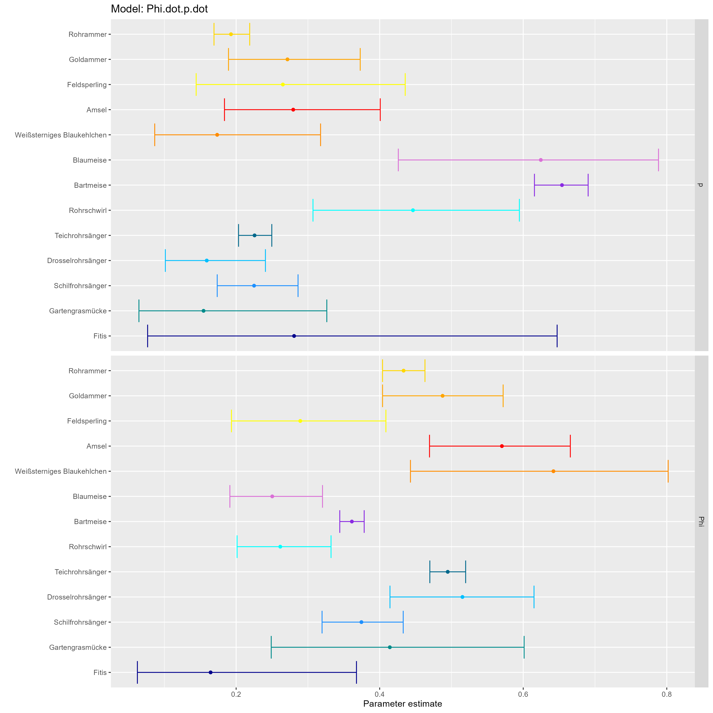
Varying survival and detection probability
Estimates for Phi and p varying over time and varying on various covariates:
Time interval: assuming even sampling effort
Sex: male, female, unknown
Observer: different samplers over entire sampling period might contribute to different detection probabilities due to different effort
Temperature: DWD Climate Data Center (CDC): Monthly mean of station observations of air temperature at 2 m above ground in °C for Germany, version v21.3, last accessed: 8.04.2024.
Fitis / Willow Warbler (Phylloscopus trochilus)
AIC values of six best models
Sex (= “Geschlecht”) seems best to model parameter estimates, as the first five models with the lowest AIC have one or both parameters, but mainly survival probability, estimated based on sex. Estimation for detection probability varies between no covariate, sex, observer and even time. All five models are better than the basic model with constant probability for Phi and p.
Phi: male = 21,5%, female and unknown < 5% (left plot, 1st row)
p = 40% (left plot, 2nd row)
Differences in survival estimate between male and female statistically not necessarily significant, as confidence interval of survival estimate of male sex within confidence interval of female sex
Differences in survival estimate between male and unknown sex statistically likely, as estimate of male sex outside of confidence interval of unknown sex
Plotting number of sampled individuals of each sex against number of recapture (right plot) shows approx. 40% of individuals captured only one time is of unknown sex, while sex is either male or female when recaptured a second time, and only male when recaptured a third time
=> caution with survival estimates, due to large amount of unknown sex in the data set
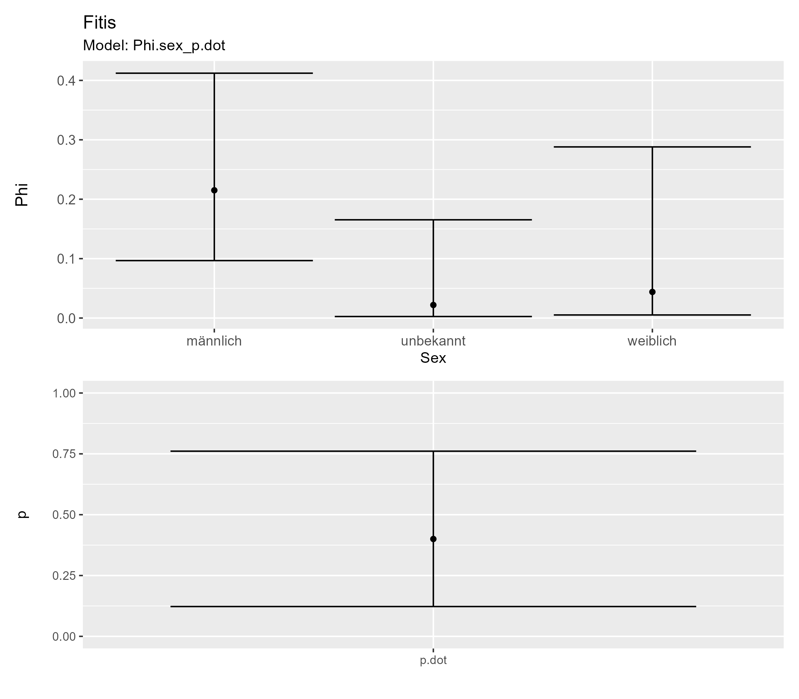
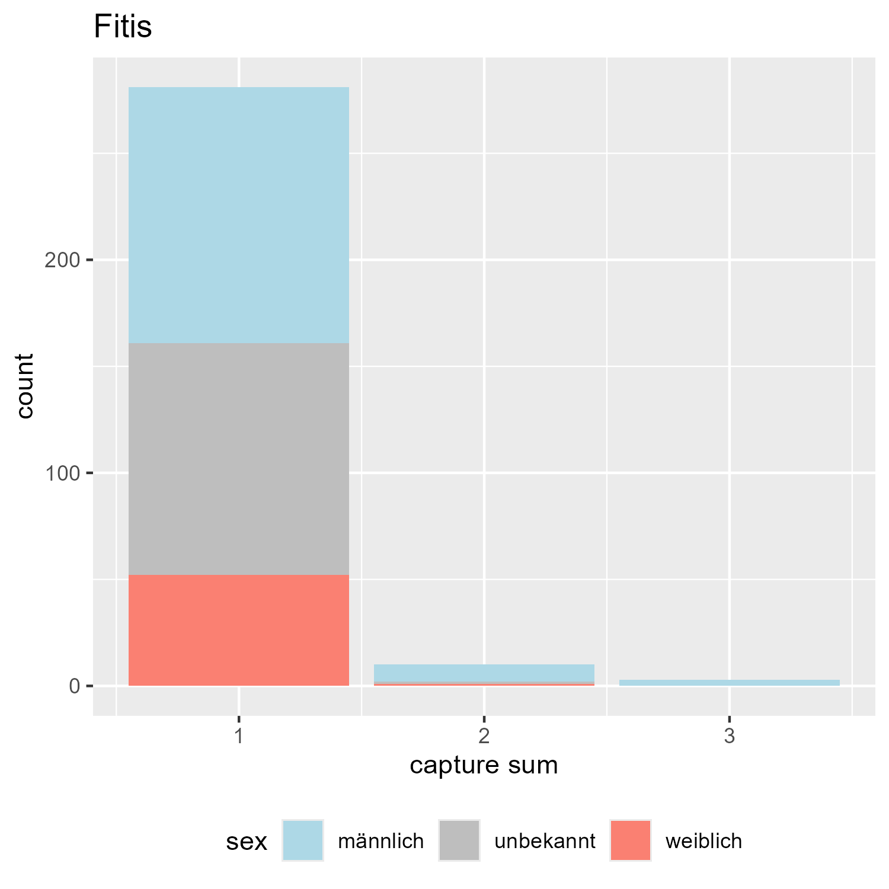
Gartengrasmücke / Garden Warbler (Sylvia borin)
AIC values of six best models
First eight models with lowest AIC and better than basic model
For phi temperature or no covariate best, otherwise sex or time interval
For p no covariate or temperature best, otherwise also time interval
Parameter estimates for best model: Phi.temp_p.dot
p = 31% (1st plot, 2nd row) detection probability higher than detection probability in basic model (p = 15%)
Phi (1st plot, 1st row): several probability peaks for survival for temperatures of around 9°, between 13° - 17°, and at 19°C
Problem of statistical significance due to wide confidence interval around survival estimates
Survival peaks in model align more or less with higher numbers of sampled individuals at those temperatures (2nd plot) -> several peaks between 12° and 19°C
=> Caution with survival estimates, due to cut off of capture data, as temperature starts only in 2004
Parameter estimates for best model: Phi.dot_p.temp
Phi = 44% (1st plot, 1st row) survival probability higher than survival probability in basic model (Phi = 37%)
p (1st plot, 2nd row): difficult to see clear trend in detection probability for temperature -> possibly due to overfitting
Problem of statistical significance due to wide confidence interval around detection estimates
Trend in detection probability between 15° - 20°C in model mirrors increasing numbers of sampled individuals for temperatures closer to 20°C (2nd plot)
=> Caution with detection estimates, due to cut off of capture data, as temperature starts only in 2004
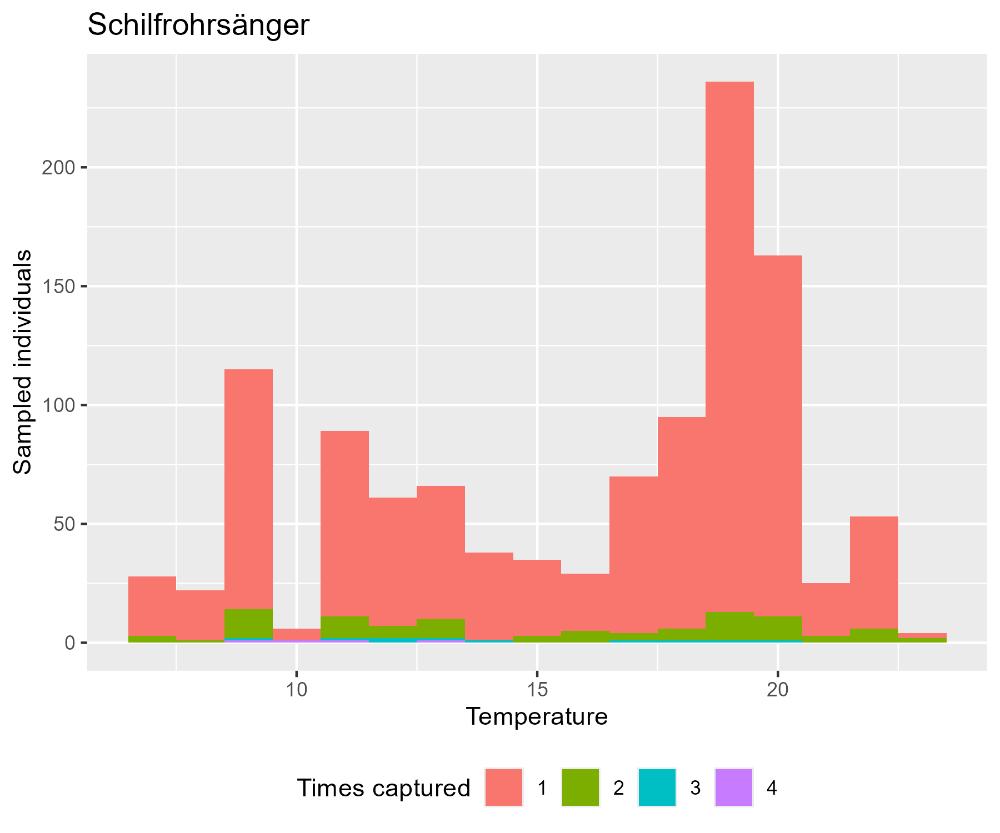
Drosselrohrsänger / Great Reed-warbler (Acrocephalus arundinaceus)
AIC values of six best models
Almost all models better than basic model
For phi temperature or no covariate best, otherwise also sex
For p no covariate or temperature best, otherwise time interval or observer (=“Initials”)
Parameter estimates for best model: Phi.temp_p.dot
p = 25% (1st plot, 2nd row) detection probability higher than detection probability in basic model (p = 16%)
Phi (1st plot, 1st row): several probability peaks for survival for temperatures between 8° - 11°, 12° - 13°, 16° - 20°, and at 22°C
Survival peaks in model mirror higher numbers of sampled individuals at those temperatures (2nd plot) -> similar hill shape in both plots between 16° and 20°C
=> Caution with survival estimates: neglect of capture data before 2004 and wide confidence interval around estimates
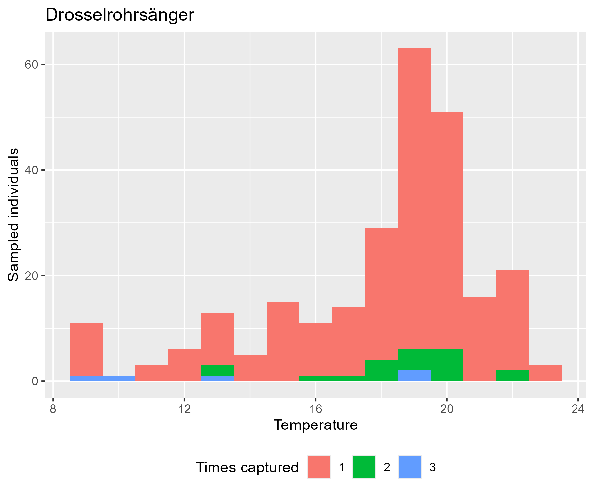
Teichrohrsänger / Common Reed-warbler (Acrocephalus scirpaceus)
AIC values of six best models
All models better than basic model
For phi no covariate or sex combined with temperature best, otherwise also temperature alone or time interval
For p temperature or no covariate best, otherwise sex or time interval
Parameter estimates for best model: Phi.dot_p.temp
Phi = 30% (1st plot, 1st row) survival probability similar survival probability in basic model (Phi = 26%)
p (1st plot, 2nd row): no clear trend in detection probability for temperature -> over fitting?
Several peaks in numbers of sampled individuals over the entire range of temperatures (2nd plot) -> for temperature range under 15°C peaks in detection probability and numbers of individuals similar
=> Caution with detection estimates: neglect of capture data before 2004 and wide confidence interval around estimates
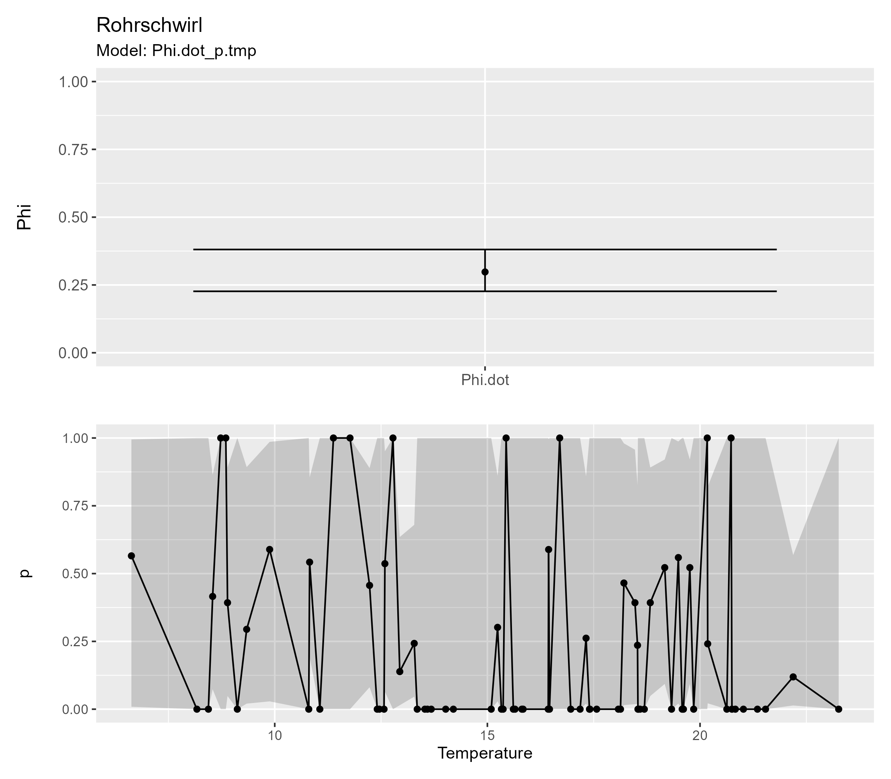
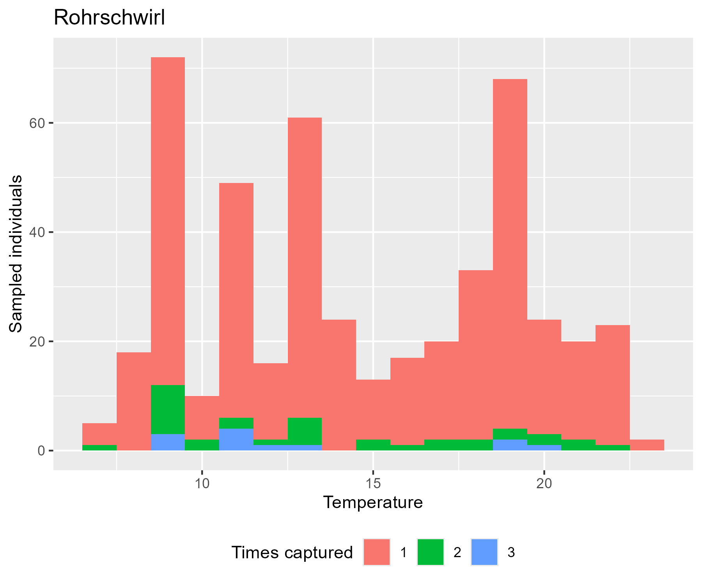
Bartmeise / Bearded Reedling (Panurus biarmicus)
AIC values of six best models
Almost all models better than basic model
For phi no covariate or temperature best, otherwise sex combined with temperature or time interval
For p temperature or no covariate best, otherwise initials
Parameter estimates for best model: Phi.time_p.sex
Statistical significant differences in detection probability between male and unknown sex (left plot, 1st row)
Male: p = 66%, unknown: p = 22%, female: p = 100%
No statistical significance for female estimate due to large confidence interval
Large proportion of unknown sex within individuals sampled over the years (left plot, 2nd row) and within individuals sampled only once (right plot, 2nd row) -> might lead to statistical artefacts
Several peaks of survival probability over the entire sampling period assuming an even time interval (left plot, 1st row): not a clear trend visible
Peaks in survival probability almost oppose peaks in distribution of sampled individuals over the years (right plot, 1st row)
Large confidence interval around survival estimates -> statistical significance questionable
Parameter estimates for best model: Phi.dot_p.initials
Phi = 70% (1st plot, 1st row) -> survival probability higher than in basic model (Phi = 64%)
Statistical differences in detection probability likely between observer “DT” or “SG” and “SR”
SR has largest amount of sampled individuals (2nd plot) -> significantly lower detection probability possibly due to disproportional large amount of individuals only captured once
DT and SG have larger proportion of individuals captured twice or thrice (2nd plot) -> higher detection estimates
Confidence interval for estimates of other observers too large -> possibly due to small data and individuals only captured once
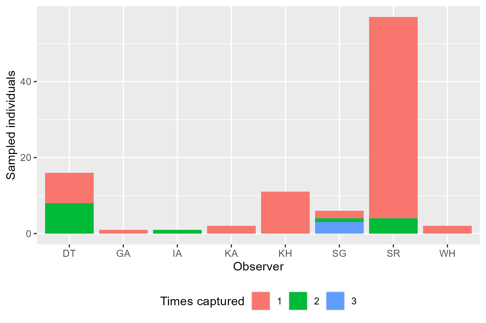
Amsel / Eurasian Blackbird (Turdus merula)
AIC values of six best models
10 models better than basic model
For phi sex or no covariate best, otherwise time interval possible
Parameter estimates for best model: Phi.sex_p.time
Statistical significant differences in survival probability for male and female (left plot, 1st row)
Male: Phi = 68%, female: Phi = 43%
Sex is 50:50 when captured only one time (right plot, 1st row), when captured twice male proportion is higher and only males are captured four time
Several peaks of detection probability over the entire sampling period assuming an even time interval (left plot, 1st row): 2001, 2009/11, 2014-2016, 2018/20/22
Peaks in detection probability mirror peaks in distribution of sampled individuals over the years (left plot, 2nd row)
Large confidence interval around estimates -> statistical significance questionable
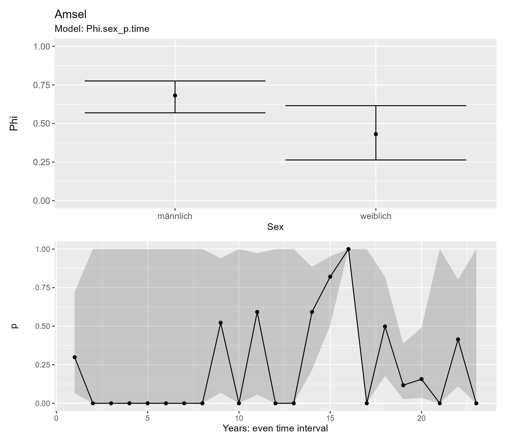
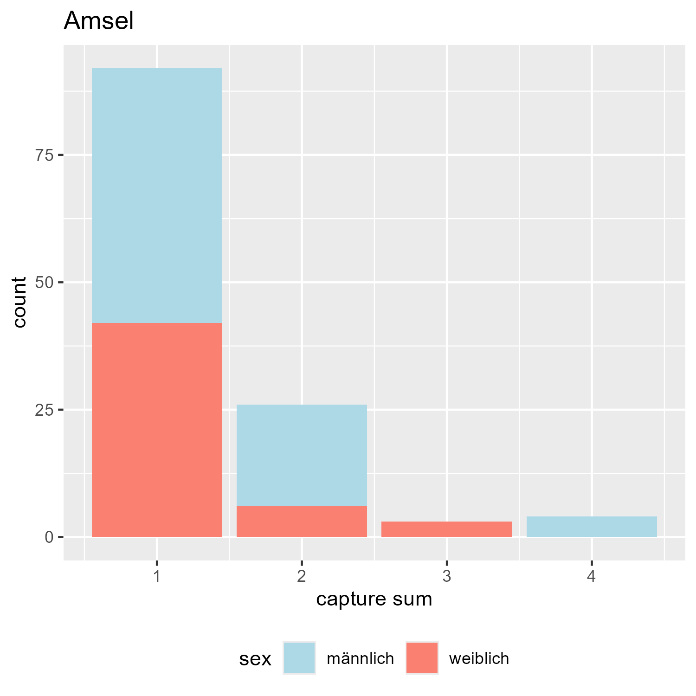
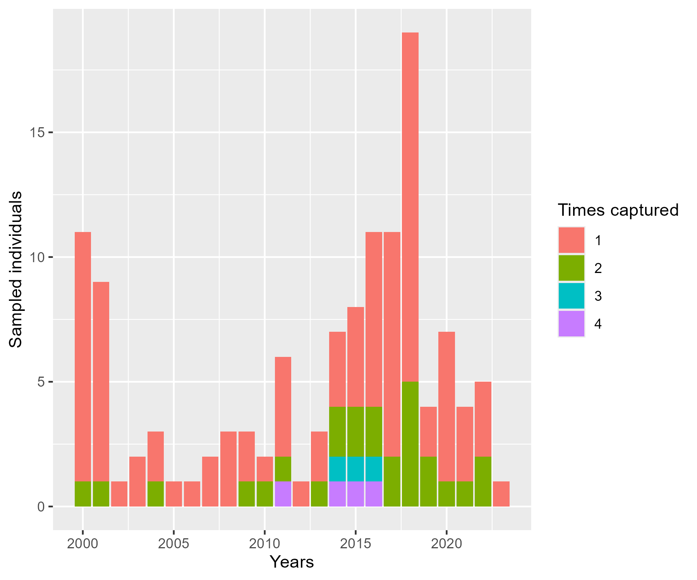
Feldsperling / Eurasian Tree Sparrow (Passer montanus)
AIC values of six best models
Almost all models better than basic model
For phi temperature or no covariate best, otherwise sex
For p no covariate or temperature best, otherwise time interval or observer
Parameter estimates for best model: Phi.temp_p.dot
p = 45% (1st plot, 2nd row) detection probability higher than in basic model (p = 27%)
Phi (1st plot, 1st row): no clear trend in detection probability for temperature
Several survival peaks over entire temperature range -> problem of over fitting?
Wide distribution with several peaks in number of sampled individuals over entire temperature range (2nd plot)
At around 10°C one individual, which has been captured twice and one four times -> might contribute to higher survival estimate for this temperature in model?
=> Caution with survival estimates: neglect of capture data before 2004 and wide confidence interval around estimates
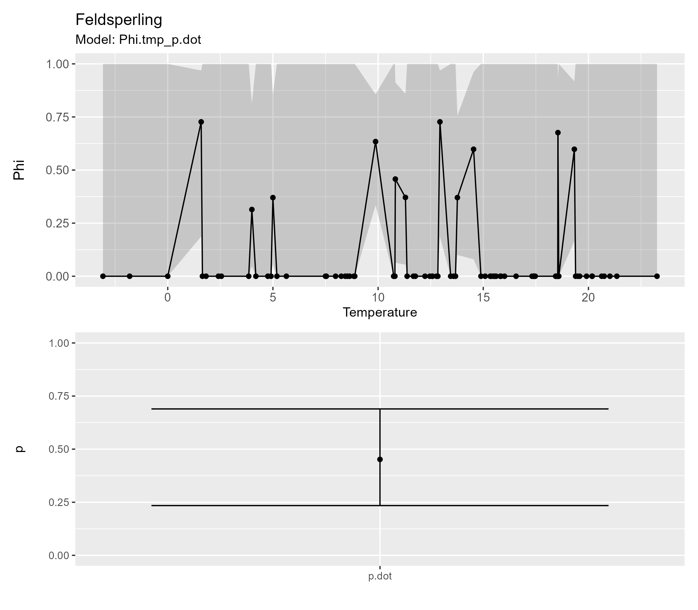
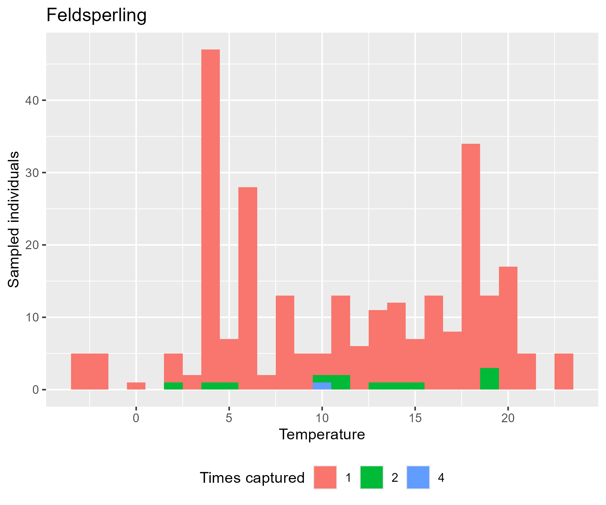
Goldammer / Yellowhammer (Emberiza citrinella)
AIC values of six best models
Almost all models better than basic model
For phi sex or no covariate best, otherwise time interval
Proportion between male and female almost 50:50 when captured only one time (right plot, 1st row), when captured twice or thrice male proportion is two-thirds higher than female -> might contribute to higher Phi in male
Several peaks of detection probability over entire sampling period assuming an even time interval (left plot, 1st row):
Slightly declining trend in survival probability after 2013, otherwise no trend recognizable
Large confidence interval around estimates -> statistical significance questionable
Wide distribution with several peaks in number of sampled individuals over entire sampling period (2nd plot)
Between 2011 and 2017 individuals captured up to three times
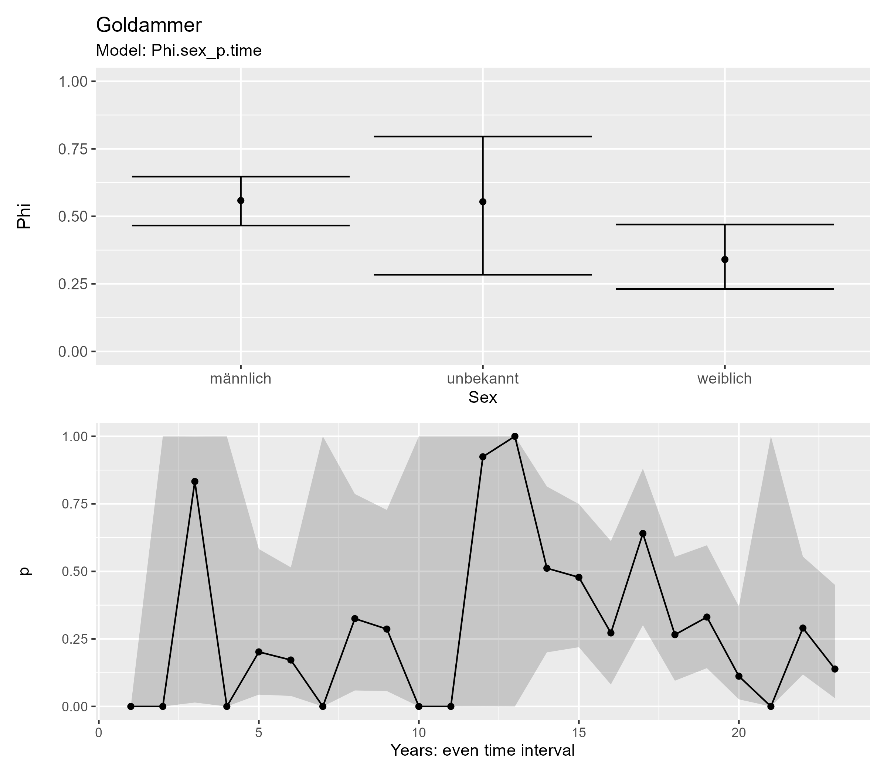
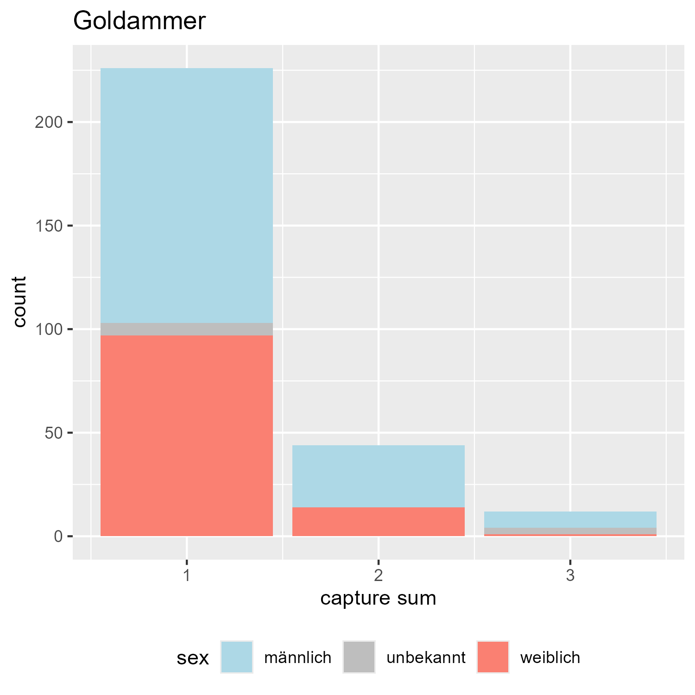
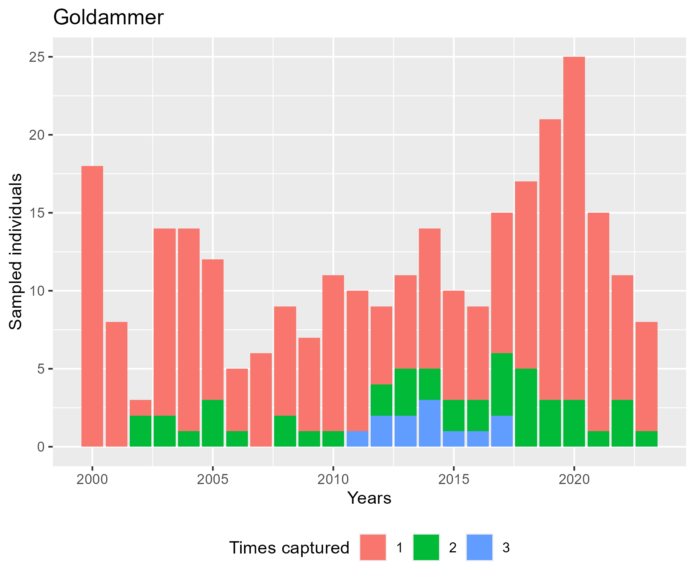
Rohrammer / Reed Bunting (Emberiza schoeniclus)
AIC values of six best models
Almost all models better than basic model
For phi no covariate or temperature best, otherwise sex or time interval
For p temperature or no covariate best, otherwise observer
Main covariates for differences in survival and detection probability:
Sex:
Male higher survival probability than female in Amsel, Goldammer;
Problemtic with large proportion of unknown sex, like Fitis and Blaumeise
Even time interval:
Differences in survival probability for each sampling occasion align with abundance distribution only for Amsel
Rather complex model with little explanantory value for Blaumeise and Goldammer
Suggestion to include effect of uneven time interval
Observer:
Different detection probability depended on observer only for Weißsterniges Blaukehlchen
Suggestion to include effect of observer on detection probability for all taxa, not just one taxa individually
Temperature:
most complex model which mostly leads to over fitting and thus little explanatory value especially for Schilfrohrsänger, Teichrohrsänger, Rohrschwirl, Bartmeise, Feldsperling
Other covariates necessary to explain abundance trends: humidity, weight, life span?